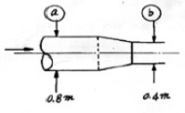
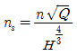
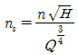
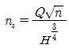
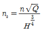
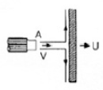
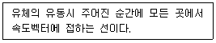
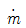

소방설비산업기사(기계) (2007-03-04 기출문제)
1과목: 소방원론
1. 다음 중 질식소화와 가장 거리가 먼 것은?
- CO2 소화기를 사용하여 소화
- 물분무의 방사를 이용하여 소화
- 포말소화 약제를 방사하여 소화
- 가스 공급밸브를 폐쇄하여 소화
(정답률: 71%)

2. 다음 화재 발생 위험에 대한 설명 중 옳지 않은 것은?
- 인화점은 낮을수록 위험하다.
- 발화점은 높을수록 위험하다.
- 산소 농도는 높을수록 위험하다.
- 연소 하한계는 낮을수록 위험하다.
(정답률: 76%)
3. 연소물에 의한 분류에서 A급 화재에 속하는 것은?
- 유류
- 목재
- 전기
- 가스
(정답률: 96%)
4. 다음 중 대기압을 나타내는 단위는?
- mmHg
- cd
- dB
- Gauss
(정답률: 80%)
5. 15℃의 물 1g을 1℃ 상승시키는데 필요한 열량은?
- 1cal
- 15cal
- 1kcal
- 15kcal
(정답률: 58%)
6. 보통 화재에서 눈부신 백색(휘백색)불꽃의 온도는 몇 ℃ 정도인가?
- 600℃
- 900℃
- 1200℃
- 1500℃
(정답률: 80%)
7. 소화기의 설치 장소로 적당하지 않은 것은?
- 통행 또는 피난에 지장을 주지 않는 장소
- 사용시 반출이 용이한 장소
- 장난의 방지를 위하여 사함들의 눈에 띄지 않는 장소
- 위험물 등 각 부분으로부터 규정된 이내의 장소
(정답률: 90%)
8. 피난대책의 일반적 원칙이 아닌 것은?
- 피난 수단은 원시적인 방법으로 하는 것이 바람직하다.
- 피난 대책은 비상시 본능상태에서도 혼돈이 없도록 하여야 한다.
- 피난 경로는 가능한 한 길어야 한다.
- 피난 시설은 가급적 고정식 시설이 바람직하다.
(정답률: 90%)
9. 다음 중 연소의 3요소가 아닌 것은?
- 점화원
- 공기
- 연료
- 촉매
(정답률: 81%)
10. 다음 중 분해연소가 일어나는 가연물은?
- 목재
- 나프탈렌
- 코크스
- TNT
(정답률: 48%)
11. 다음 중 화재의 원인으로 볼 수 없는 것은?
- 복사열
- 마찰열
- 기화열
- 정전기
(정답률: 66%)
12. 철골콘크리트조의 기둥에서 내화구조의 기준으로 옳은 것은?
- 작은지름 15cm 이상으로서 철골을 두께 4cm 이상의 철망 몰탈로 덮은 것
- 작은지름 20cm 이상으로서 철골을 두께 7cm 이상의 콘크리트 블록으로 덮은 것
- 작은지름 25cm 이상으로서 철골을 두께 5cm 이상의 콘크리트로 덮은 것
- 작은지름 30cm 이상으로서 철골을 두께 3cm 이상릐 석재로 덮은 것
(정답률: 68%)
13. 황린의 저장 방법으로 옳은 것은?
- 물속에 저장한다.
- 아세톤 속에 저장한다.
- 강산화제와 혼합하여 저장한다.
- 아세틸렌 가스로 봉입하여 저장한다.
(정답률: 87%)
14. 화재시 연소물의 온도를 일정 온도 이하로 낮추어 소화하는 방법은?
- 질식소화
- 냉각소화
- 제거소화
- 희석소화
(정답률: 81%)
15. 증기비중에 대한 설명 중 옳지 않은 것은?
- 증기비중이 1조다 크면 공기보다 무겁고, 1보다 작으면 공기보다 가벼운 것을 의미한다.
- 건조공기의 무게를 1로 했을 때 이와 비교되는 증기의 상대적 무게를 증기비중이라 한다.
- 증기비중은 증기의 분자량을 공기의 분자량으로 나눈 값이다.
- 가스누출시 증기비중에 따라서 LNG는 바닥에, LPG는 위에 모이게 된다.
(정답률: 57%)
16. 다음 중 하론 1301의 화학식에 포한되지 않는 원소는?
- 탄소
- 염소
- 불소
- 브롬
(정답률: 54%)
17. 제4류 위험물의 일반적인 특성이 아닌 것은?
- 인화가 용이한 액체이다.
- 대부분의 증기는 공기보다 가볍다.
- 물보다 가볍고 물에 녹지 않는 것이 많다.
- 대부분 유기화합물질이다.
(정답률: 74%)
18. 양초와 같이 고체가 기체로 되어 연소하는 형태는 어떤 연소에 해당하는가?
- 표면연소
- 분해연소
- 자기연소
- 증발연소
(정답률: 79%)
19. 건물내부에서 화재가 발생하여 실내온도가 27℃에서 1227℃로 상승한다면 이 온도상승으로 인하여 실내공기는 처음의 몇 배로 팽창하겠는가? (단, 화재에 의한 압력변화 등 기타 주어지지 않은 조건은 무시한다.)
- 3배
- 5배
- 7배
- 9배
(정답률: 78%)
20. 다음 중 정전기를 방지하기 위한 대책에 해당되지 않는 것은?
- 접지를 한다.
- 물질의 마찰을 크게 한다.
- 공기를 이온화한다.
- 공기의 상대습도를 일정 수준 이상으로 유지한다.
(정답률: 78%)
2과목: 소방유체역학
21. 다음 중 Newton의 점성법칙을 기초로 항 점도계는?
- 낙구식 점도계
- Ostwald 점도계
- Saybol1 점도계
- Sromer 점도계
(정답률: 52%)
22. 밑면의 가로, 세로가 각각 20m이고 높이가 3m인 직육면체 바지선을 소방정으로 만들고 그 위헤 49kN의 소화약제를 실었다. 이 때 바지선을 만든 재료의 비중이 0.8이라면 바닷물 속에 잠긴 바지선의 부피는 약 몇 m3 인가? (단, 바닷물의 비중은 1.025로 한다.)
- 975
- 960
- 941.5
- 930.5
(정답률: 32%)
23. 질량유량 900kg/s로 물(밀도 1000kg/m3)이 그림과 같이 관내를 흐르고 있다. ⓑ지점에서의 평균유속은 약 몇 m/s인가?

- 1.79
- 3.58
- 7.16
- 14.3
(정답률: 32%)
24. 펌프의 비속도(ns)를 구하는 식으로 맞는 것은? (단, 기호는 Q : 유량, n : 회전수, H : 진양정 이다.)




(정답률: 47%)
25. 경우 화재시 주수(물)에 의한 소화가 부적당한 이유는?
- 물보다 비중이 가벼워 물 위에 떠서 화재 확대의 우려가 있으므로
- 물과 반응하여 유독가스를 발생하므로
- 경유의 연소열로 산소가 방출되어 연소를 돕기 때문에
- 경우가 연소 할 때 수소가스가 발생하여 연소를 돕기 때문에
(정답률: 80%)
26. 국소 대기압이 0.08MPa이고 절대압력이 0.5MPa인 경우 게이지 압력은 얼마인가?
- 0.58 MPa
- 0.42 MPa 진공
- 0.58 MPa 진공
- 0.42 MPa
(정답률: 42%)
27. 20℃에서 물이 지름 75mm인 관속을 1.9L/s로 흐르고 있다. 이때 레이놀즈 수를 구하면? (단, 20℃일 때 물의 동점성계수는 1.006×10-6m2/s이다.)
- 11284
- 19874
- 28294
- 32063
(정답률: 27%)
28. 처음에 온도, 비체적이 각각 T1, v1인 이상기체 1kg을 압력 P로 일절하게 유지한 채로 가열하여 온도를 3T1까지 상승시킨다. 이상기체가 한 일은 얼마인가?
- Pv1
- 2v1
- 3v1
- 4v1
(정답률: 43%)
29. 그림과 같이 유량 0.314m3/s로 분출하는 물제트가 5m/s의 속도로 이동하고 있는 평판에 충돌할 때 평판에 작용하는 힘은 몇 N인가? (단, 제트의 지름은 200mm 이고, 물의 밀도는 1000kg/m3이다.)

- 196.4
- 273.3
- 783.8
- 984.4
(정답률: 47%)
30. 물이 안지음 500mm인 파이프를 통하여 5m.s의 속도로 흐를 때 유량은 몇 m3/s 인가?
- 0.98
- 1.25
- 2.46
- 3.64
(정답률: 50%)
31. 송풍기의 전압이 15mmAq, 풍량이 20m3/min, 전압효율이 0.6일 때 축동력은 몇 W인가?
- 463
- 816
- 1110
- 1264
(정답률: 43%)
32. 다음의 위험물 중 물 소화약제를 사용하여 소화할 수 있는 물질은?
- 유황
- 마그네슘
- 칼륨
- 나트륨
(정답률: 50%)
33. 관의 온도 T가 시간 t에 따라 Tet1/4으로 변하고 있다. 여기서 상수 Te는 절대온도이다. 이 관의 흑체 방사도는 시간에 따라 어떻게 변하는가? (단, σ는 슈테판-볼쯔만 상수이다.)
- σT4e
- σT4et
- σT4et2
- σT4et4
(정답률: 48%)
34. 사염화탄소(CCl4) 사용시 발생할 수 있는 독성가스는?
- 포스겐가스
- 이산화탄소
- 질소
- 수소
(정답률: 88%)
35. 분자량이 44인 이상기체의 압력이 98kPa 이고 온도가 15℃잉 때 밀도는 몇 kg/m3 인가? (단, 일반기체상수는 8314 J/kmolㆍK이다.)
- 1.2
- 1.6
- 1.7
- 1.8
(정답률: 38%)
36. 아래 보기의 정의는 무엇을 설명한 것인가?

- 유성
- 유액선
- 유적선
- 시간선
(정답률: 24%)
37. 배관속을 완전히 발달된 난류로 흐르는 유체의 손실수두에 관한 사항으로 옳은 것은?
- 마찰계수는 반비례한다.
- 관의 길이에 비례한다.
- 유속에 반비례한다.
- 관의 내경에 비례한다.
(정답률: 50%)
38. 다음 중 대표적인 펌프(pump)의 이상현상에 해당하지 않는 것은?
- 공동현상(cavitation)
- 수격작용(water hammer)
- 역동현상(surging)
- 진공현상(vacuum)
(정답률: 52%)
39. 다음은 청정 소화약제 IG-541에 대한 설명이다. 바르지 못한 것은?
- 질소, 아르곤, 이상화탄소의 혼합기체이다.
- 화학적 소화효과에 의해서 소화가 된다.
- 독성이 비교적 낮아 전역방출방식용으로 사용이 가능하다.
- 오존파괴지수가 0 이다.
(정답률: 24%)
40. 검사면을 통과하는 유동에 대하여 질량유량(

)을 다음과 같이 구하는 경우가 있다. =ρA V 여기서 ρ는 밀도, A는 유동 단면적, V는 유체의 속도이다. 이 식이 성립하기 위해 필요한 조건이 아닌 것은?
=ρA V 여기서 ρ는 밀도, A는 유동 단면적, V는 유체의 속도이다. 이 식이 성립하기 위해 필요한 조건이 아닌 것은?- 검사면은 움직이지 않는다.
- 밀도는 일정하다.
- 검사면이 원형이다.
- 유동은 검사면에 수직이다.
(정답률: 38%)
3과목: 소방관계법규
41. 다음 중 화재를 진압하거나 인명구조 활동을 위하여 사용하는 소화활동설비에 포함되지 않는 것은?
- 비상콘센트설비
- 무선통신보조설비
- 연소방지설비
- 자동화재속보설비
(정답률: 53%)
42. 다음 중 소방신호의 설명으로 옳지 않은 것은?
- 훈련신호 : 훈련상 필요하다고 인정되는 때 발령
- 발화신호 : 화재위험경보시 발령
- 해제신호 : 소화활동이 필요없다고 인정되는 때 발령
- 경계신호 : 화재예방상 필요하다고 인정되는 때 발령
(정답률: 58%)
43. 다음 중 소방대상물에 속하지 않는 것은?
- 선박건조 구조물
- 산림
- 항해 중인 선박
- 차량
(정답률: 82%)
44. 다음 특정소방대상물 중 자동식 소화기를 설치하여야 하는 것은?
- 아파트
- 지하가중 터널로서 길이가 1000m 이상인 터널
- 지정문화재 및 가스시설
- 항공기 격납고
(정답률: 18%)
45. 화재가 발생하는 경우 인명 또는 재산의 피해가 클 것으로 예상되는 때 소방대상물의 개수ㆍ이전ㆍ제거, 사용금지 등의 필요한 조치를 명할 수 있는 자는?
- 시ㆍ도지사
- 기초자치단체장
- 소방본부장 또는 소방서장
- 의용소방대장
(정답률: 80%)
46. 다음 중 위험물에 대한 용어의 정의를 바르게 설명한 것은?
- 인화성 또는 발화성 등의 성질을 가지는 것으로서 대통령령이 정하는 물품을 말한다.
- 국무총리령으로 정하는 인화성 또는 발화성 등의 물품과 특수가연물을 말한다.
- 시ㆍ도 조례로 정하는 인화성 또는 발화성 등의 물품을 말한다.
- 행정자치부령이 정하는 인화성 또는 발화선 등의 물품과 특수가연물을 말한다.
(정답률: 87%)
47. 다음 특정대상물 중 숙박시설에 해당하지 않는 것은?
- 업무를 주로 하는 각 개별실에 일부 숙식을 할 수 있는 건축물
- 호텔ㆍ여관ㆍ모텔ㆍ여인숙
- 한국전통호텔
- 수상관광호텔
(정답률: 53%)
48. 다음 중 건축물 내부의 천장 또는 벽에 설ㄹ치하는 실내장식물에 해당하지 않는 것은?
- 너비 10cm 이하의 반자 돌림대
- 합판
- 두께 4mm 이상인 종이류
- 흡음을 위하여 설치하는 흡음재
(정답률: 30%)
49. 소방용수시설에서 저수조의 설치 기준으로 적합하지 않은 것은?
- 지면으로부터의 낙차가 6m 이하일 것
- 흡수부분의 수심이 0.5m 이상일 것
- 소방펌프자동차가 쉽게 접근할 수 있도록 할 것
- 흡수에 지장이 없도록 토사 및 쓰레기 등을 제거할 수 있는 설비를 갖출 것
(정답률: 85%)
50. 자동화재탐지설비의 하자보수 보증기간은?
- 1년
- 2년
- 3년
- 5년
(정답률: 66%)
51. 다음 중 소방용기계ㆍ기구에 속하지 않는 것은?
- 화학반응식거품소화약제
- 방염액ㆍ방염도료 및 방염성물질
- 자동소화설비의 기기 중 유수검지장치
- 가스누설경보기
(정답률: 45%)
52. 소방시설공사업법상 소방시설업에 속하지 않는 것은?
- 소방시설관리업
- 소방시설설계업
- 소방시성공사업
- 소방공사감리업
(정답률: 59%)
53. 정당한 사유없이 소방대가 현장에 도착할 때까지 사람을 구출하는 조치 또는 불을 끄거나 불이 번지지 아니하도록 하는 조치를 하지 아니한 관계자에 대한 벌칙은?
- 1년 이하의 징역
- 1000만원 이하의 벌금
- 500만원 이하의 벌금
- 100만원 이하의 벌금
(정답률: 65%)
54. 다중이용업의 범위에 속하는 학원의 수용인원을 산정하려고 한다. 다음 중 바닥면적에 포함시켜야 하는 것은?
- 복도의 면적
- 계단의 면적
- 휴게실의 면적
- 화장실의 면적
(정답률: 54%)
55. 다음 중 다중이용업에 해당하지 않는 것은?
- 놀이방업
- 고시원업
- 콜라텍업
- 단란주점영업
(정답률: 26%)
56. 다음 중 면적에 관계없이 건축허가 동의를 받아야 하는 소방대상물은?
- 근린생활시설
- 위락시설
- 항공기격납고
- 업무시설
(정답률: 72%)
57. 소방공사감리업의 업무 수행 내용과 거리가 먼 것은?
- 공사중인 소바시설등의 성능시험
- 공사업자의 소방시설등의 시공이 설계도서 및 화재안전기준에 적합한지에 대한 지도ㆍ감독
- 소방시설등의 설치계획표의 적법성 검토
- 실내장식물의 불연화 및 방염물품의 적법성 검토
(정답률: 32%)
58. 건축물 또는 공작물에는 화재발생 등 비상시에 안전한 곳으로 피난할 수 있도록 주된 출입구 외에 비상구를 설치하고 있다. 다음 중 비상구로 사용되는 출입구의 크기로 알맞은 것은?
- 가로 95cm 이상, 세로 110cm 이상
- 가로 85cm 이상, 세로 130cm 이상
- 가로 75cm 이상, 세로 150cm 이상
- 가로 65cm 이상, 세로 170cm 이상
(정답률: 38%)
59. 소방시설의 작동기능점검을 실시한 자는 그 점검결과를 얼마 동안 자체 보관하여야 하는가?
- 1년
- 2년
- 3년
- 4년
(정답률: 74%)
60. 화재, 재난, 재해 그 밖의 위급한 상황이 발생한 현장에는 소방활동에 필요한 자로서 그 구역에의 출입을 제한할 수 있다. 다음 중 소방활동구역의 설정권자는?
- 소방방재청장
- 시ㆍ도지사
- 소방대장
- 시장, 군수
(정답률: 72%)
4과목: 소방기계시설의 구조 및 원리
61. 는 스프링클러 헤드의 어떠한 식을 나타내는가? (단, P : 방수압력, K : 방수상수 이다.)
- 살수 분포시험
- 충전압 시험
- 수격 시험
- 방수량 시험
(정답률: 48%)
62. 제연설비에 사용되는 원심식 송풍기의 형태가 아닌 것은?
- 다익형
- 레이디얼형
- 익형
- 프로펠러형
(정답률: 32%)
63. 연결송수관 설비를 설치하는 목적으로 적합한 것은?
- 옥내소화전 설비의 사용보다 많은 량의 방수를 필요로 하는 화재에 대비
- 초기소화시 타설비와 동시 사용으로 방수량을 증가 시키기 위해서
- 호스길이가 길어서 옥내소화전보가 성능이 좋기 때문에
- 소방차의 방수설비의 도달거리와 건물외피의 살수 장애를 극복하기 위해서
(정답률: 40%)
64. 배관의 신축이음 형식과 관련이 없는 것은?
- 벨로우즈 형
- 베벨엔드 형
- 루프 형
- 스위블 형
(정답률: 54%)
65. 소화기 및 가압용 가스용기의 안전밸브에 관한 설명으로 적합하지 아니한 것은?
- 본체용기내 압력을 유효하게 감입할 수 있는 구조로 한다.
- 분해 혹은 조정이 가능한 구조로 한다.
- 봉관식의 경우 분출구에는 봉인을 하여야 한다.
- 안전밸브에는 「안전밸브」표시를 한다.
(정답률: 64%)
66. 피난기구의 화재안전기준에 의한 피난기구가 아닌 것은?
- 미끄럼대
- 피난 사다리
- 구조대
- 엘리베이터
(정답률: 90%)
67. 포소화설비의 포헤드는 소방대상물의 바닥면적 몇 m2마다 1개 이상 설치하여야 하는가?
- 7m2
- 9m2
- 11m2
- 13m2
(정답률: 57%)
68. 강관 절단 후 단면의 안쪽에 생기는 거스러미를 제거하는 공구는?
- 파이프 커터
- 파이프 밴더
- 파이프 리머
- 파이프 바이스
(정답률: 69%)
69. 스프링클러 설비의 가압 송수장치 정격토출 압력은 하나의 헤드 선단에서 얼마의 압력이 되어야 하는가?
- 0.1MPa(1kgf/cm2)이상 0.7MPa(7kgf/cm2)이하
- 0.17MPa(1.7kgf/cm2)이상 1.2MPa(12kgf/cm2)이하
- 0.1MPa(1kgf/cm2)이상 1.2MPa(12kgf/cm2)이하
- 0.17MPa(1.7kgf/cm2)이상 0.7MPa(7kgf/cm2)이하
(정답률: 37%)
70. 연결송수관설비의 설명 중 맞지 않는 것은?
- 11층 이상의 부분에 설치하는 방수구는 쌍구형으로 할 것
- 송수구는 지면으로부터 높이 0.5m 이상 2.5m 이하의 위치에 설치할 것
- 방수구의 호스접결구는 바닥으로부터 높이 0.5m 이상 1.0m 이하의 위치에 설치할 것
- 송수구 및 방수구는 구경 65mm의 것으로 할 것
(정답률: 48%)
71. 상수도소화용수설비의 설치기준으로 적합하지 않는 것은?
- 상수도소화용수설비는 수도법의 규정을 따른다.
- 소화전은 소방자동차 등의 진입이 쉬운 도로변 또는 공지에 설치한다.
- 호칭지름 50mm 이상의 수도배관에 호칭지름 80mm 이상의 소화전을 접속한다.
- 소화전은 소방대상물의 수평투영면의 각 부분으로부터 140m 이하가 되도록 설치한다.
(정답률: 75%)
72. 포소화설비의 자동식 기동장치에 사용되는 감지기와 폐쇄형스프링클러헤드에 대한 내용 중 잘못된 것은?
- 하나의 감지장치 경계구역은 2개 이상의 층이 되도록 한다.
- 스프링클러헤드는 표시온도가 79℃ 미만인 것을 사용한다.
- 1개의 스프링클러헤드의 경계면적은 20m2 이하로 한다.
- 부착면의 높이는 바닥으로부터 5m 이하이어야 한다.
(정답률: 40%)
73. 물분무소화설비의 화재안전기준에서 차량이 주차하는 바닥의 경우 배수구를 향한 기울기는?
- 50 분의 1 이상
- 75 분의 1 이상
- 100 분의 1 이상
- 150 분의 1 이상
(정답률: 54%)
74. 다음 중 왕복펌프의 특징이 아닌 것은?
- 흡입밸브와 송출밸브가 있다.
- 높은 송출 압력을 얻을 수 있다.
- 기어 펌프가 대표적인 왕복 펌프이다.
- 다름 펌프에 비해 역동이 심하다.
(정답률: 55%)
75. 제연설비에 설치하는 배출기의 흡입측 풍도안의 풍속은 얼마 이하로 하는가?
- 5m/s
- 10m/s
- 15m/s
- 20m/s
(정답률: 35%)
76. 스프링클러 소방설비의 화재안전기준에서 특수 가연물을 취급하는 랙크식 창고에는 랙크높이 몇 m 이하마다 스프링클러헤드를 설치하여야 하는가?
- 1.7m
- 2.1m
- 4m
- 6m
(정답률: 26%)
77. 소화기구의 표시내용 중 적합하지 않는 것은?
- 종별 및 형식
- 소화능력 단위
- 방사거리 및 방사시간
- 경보방법
(정답률: 74%)
78. 저압식 이산화탄소 소화설비의 배관에 사용되는 동관은 몇 MPa(kgf/cm2)이상의 압력에 견딜 수 있는 것을 사용하여야 하는가?
- 5.0MPa(50kgf/cm2)
- 4.75MPa(47.5kgf/cm2)
- 3.75MPa(37.5kgf/cm2)
- 3.0MPa(30kgf/cm2)
(정답률: 70%)
79. 할로겐화합물이 가압식 가스저장용기에는 얼마 이하의 압력으로 조정할 수 있는 압력 조정장치를 설치하여야 하는가?
- 1.0MPa(10kgf/cm2)
- 2.0MPa(20kgf/cm2)
- 3.0MPa30(kgf/cm2)
- 4.0MPa(40kgf/cm2)
(정답률: 45%)
80. 분말소화설비에서 저장용기의 내부압력이 설정압력으로 되었을 때 주 밸브를 개방하기 위해 저장용기에 설치하는 것은?
- 정압작동장치
- 체크밸브
- 압력조정기
- 선택밸브
(정답률: 67%)